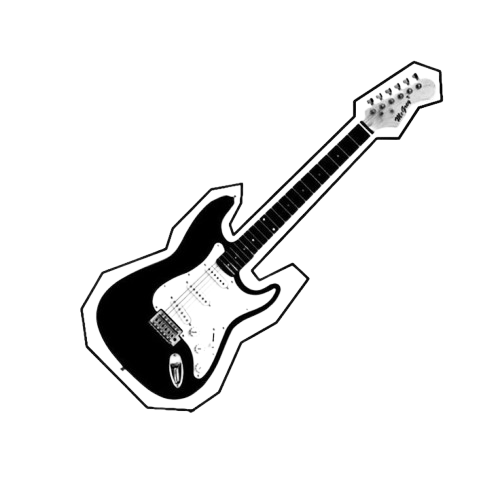
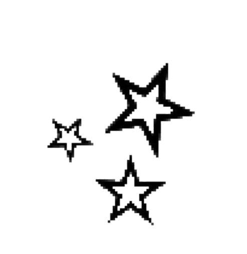
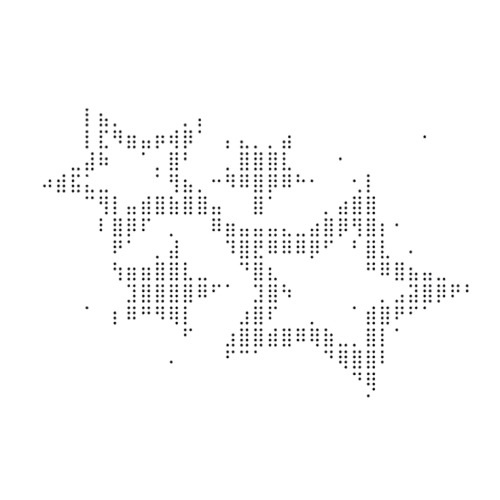
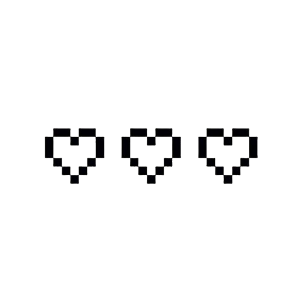
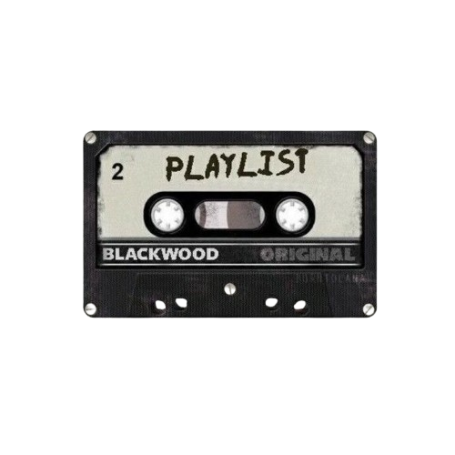
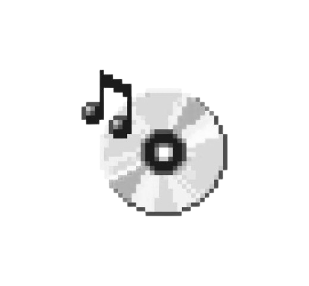
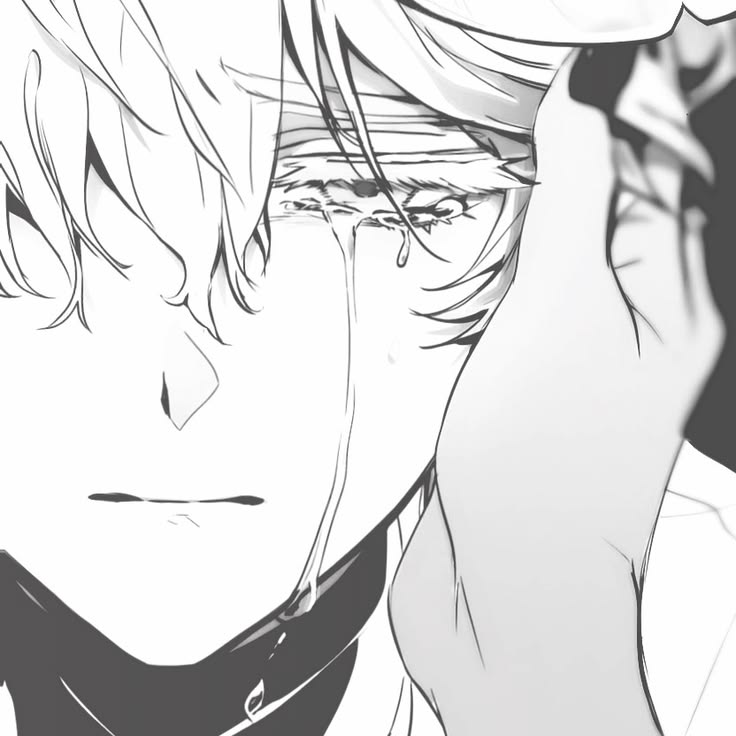

| Title of Piece | Publication |
|---|---|
| Red Meat | Behind The Closet Door: A Pride Month Special Anthology | Jolle Publication |
| State of the Art | Helter Skelter | DLSU Writer's Guild |
|
A Lightkeeper A Mage’s Lullaby Dissonance Fiction Seafaring The Outskirts of a Town The Seer’s Odyssey |
Issue 08: Whatevermaxxing | ParoxyZine |
| Issue 04: The Tapestry | WIA Magazine | |
| Inside My Treehouse | Issue 01: Time Keeps A Pocket | The Atelier Literary Magazine |

Clematis
When humans drop like flies
Who would visit the shrine?
As famine clouds the village,
Death fetches all and leaves none.
A plague that poisons a god,
The loss of faith contagious.
The strength from the villagers
Have long been vanquished
Perished into thin air, nothing.
No more believers who dream
Of praying to their beloved god,
Who now resembles a wilted flower.
There is but one survivor
The lover, the fool, the god’s heart
Shielded as a right-hand man,
Trusted as the highest subordinate;
A love that is too tragic, piercing,
Transcends immortality and beyond.
He who narrowly avoids death
Under a divine protection
Weeps for all of the deceased
As he fears the fleeting time.
One lapse of memory
Is his worst ever enemy.
When a deity’s vessel stays on earth,
Albeit lifeless and unmoving,
What better way there is
To ratify an act of remembrance
Than to devour the vessel
Piece by piece, out of love?
Godhood is not about hunger
And neither it is about desire;
One would speak it a testament
To an everlasting rule over gold
One that oversees everything,
Yet, remains flawed at the core.
What tastes exquisite the most
A part of the deity left in existence;
Every mouthful, every sip of blood,
A holy reverence that craves
To honor the traces of the past—
Each piece holds lavish stories.
“This way, I’ll never forget you.
This way, you’ll forever be in me.
I may not be a deity, my Lord,
As I am only your humble servant,
But have faith that this is my salvation,
And be that as it may, all for you.”
A worshipper so loyal denies
What has dawned to be impossible.
Twisted guts sprawled on the ground,
The fruit of obsession gleams;
Rooted in love as the blood mixes
With the fertile soil there to witness.
A grotesque finale there is,
The pinnacle of divinity
Amid tendrils of consumed agony;
In the decaying madness lies
Abound remains in relics
Wholly in the form of gluttony.

Wraiths of the Carmine
Always clad in black and white,
The cold of the morgue bites.
Sorrows float among the sky,
Void of stars yet full of eyes;
Watchful, wary, and weary
As the night is draped in eerie.
Two lonely figures live together
In a home no one dares to enter
A mortuary isolated in town,
Masked and dons a crown
Bloodied and of dried mosses,
All in the presence of corpses.
The dead have ears and whispers,
But secrets stay prisoners.
A mortician holds his darling friend,
His beloved, a chéri of crimson red.
What the town does not know,
The cherished bleeds in the snow.
An eldritch creeps, blends, adapts—
Unbecoming of a human entrapped;
A humane life devoid of the complex,
The concept of emotions unpressed,
An honest mind of godhood speaks
For the untapped horrors to leak.
Autonomy vanishes and hides;
Is a stranger welcome inside?
A being of the unknown pretends
And yet shall never replace the dead.
The freezer remains full of flesh,
Torn limbs crushed in the mess.
The scalpel’s untouched for days,
Cadavers pile up in arrays.
The broken intellect of soul asks,
“Who. Are. You… Who. Are. You?”
To which the impostor responds,
“I am your creation. Your friend.”
The winds brew icier, unforgiving,
Shrieks flooding the grieving.
Memories fragmented, barely alight
As childhood gnaws at the corners.
The windowless room endures
With a flickering bulb and lures.
Mechanical responses fill the air
The funerary crawling with despair.
Short exchanges amid the lost
They listen, the wandering ghosts;
And yet, nobody seems to care
About identities yet to spare.
Beyond the morbidity lies
A town so forgetful in guise.
The mourning doesn’t mourn,
No one lays to rest the unborn.
There is no lament among the living,
Just as there is no beginning.
The deceased had never existed.
The notion of their vessels buried
In an outskirts home is forgotten,
Skins soggy and organs rotten;
The names muddied in mists,
Their hollow sentiments adrift.
The mortician steps into the outside
Cemetery-bound, raising tides.
A tombstone draws him in,
Unnaturally, shattering within.
The engraved is unfamiliar;
The heart yearns, but does not tire.
Warm is the basket of food;
The mortician recollects, broods—
If he was who offered it ahead.
Years of youth spent with the dead,
All the love shared in spurs
And yet, remembrance all but blurs.
The rivers are still, no cries,
Not a sign of life for miles.
Upon returning, what greets
Is the stench of bile and meat.
The absence of heat persists
As the burden to carry itself twists.
New bodies appear in the throng
Deaths sustain, but not for long.
Slowly, the puzzle pieces themselves
Into the dark the doctor delves.
His “friend” awaits his arrival,
In the crematorium belies survival.
The unrecognized are cremated,
Bones and ashes negated.
In the flames do memories burn
To the point of no return.
The god feeds on fond hearts,
A receptacle believed to impart.
Embalming fluids sit on the corner
Where stood the wraiths of foreigners.
Adorned with thorns of skulls,
Cloaked in cuts from cavities dull,
Vital is the ritual of departures—
His existence far from erasure.


Soonersoonest is a writer with a lot on their mind, and they hold endless dreams and imagination. They started publishing stories online, from their roots on Wattpad, before gradually moving on to writing heartfelt and creative fanfiction on Archive of Our Own. As a child, they would think of their own writing prompts and further enrich the stories behind their notebooks during class to relieve boredom. Sometimes, when they weren’t busy with their academic and extracurricular responsibilities, or when they were desperate to escape from the endless tasks for a while, they would pick up a pen and start writing on paper to understand the vastness and meaning of things, and most of all, their life, which, while lacking direction, is still meaningful.


